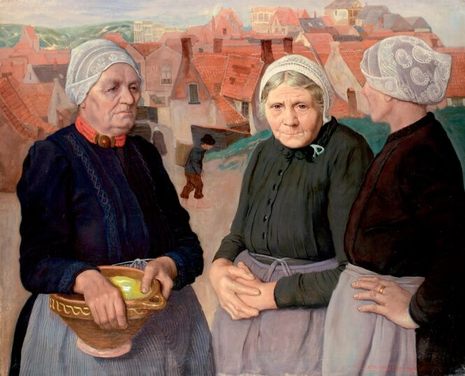

01 / DIALECT
Den Helder
Marinestad

Dialecten behoren tot het “immateriële erfgoed”, je kunt het immers niet beetpakken en in een vitrine bewonderen, een taal moet je horen en beleven.
Een taal is sterk aan veranderingen onderhevig. Veel van deze dialecten verdwijnen langzamerhand. Aan de Zijde klonk een verzameling dialecten van boeren en visserlui met veel overeenkomsten en net zo veel verschillen.
Beluister hieronder diverse “Zijdse” dialecten.
Vier stemmen uit de kuststreek, bewaard in lokale geluidsfragmenten.